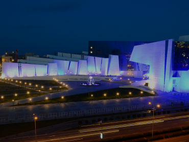
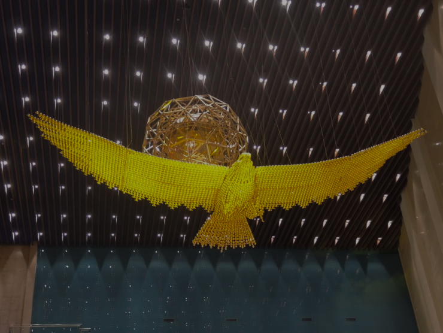

The National Museum of the Republic of Kazakhstan is the youngest and largest museum in Central Asia. It was established as part of the «Cultural Heritage» State Program by the order of the President of the Republic of Kazakhstan, N.A. Nazarbayev. On 2 July 2013, the Government of the Republic of Kazakhstan issued Decree No. 675, creating the Republican State Institution «National Museum of the Republic of Kazakhstan».
Location
The museum is located on the country’s main square — Independence Square — harmoniously fitting into the unified architectural ensemble alongside the «Qazaq Eli» monument, the Palace of Independence, the Palace of Peace and Concord, the Khazret Sultan Cathedral Mosque, and the National University of Arts.
Front facade of the National Museum on Independence Square in Astana

Nighttime view of the National Museum exterior
Architecture and Scale
The building of the museum attracts the eye with its unusual external form. The largest unique museum complex has a total area of 74,000 m² and consists of seven blocks with variable storeys up to the ninth floor. The exhibition space covers 20 halls with a combined area of more than 14,000 m².

Interior of the museum’s main exhibition hall
Key figures of the museum
Parameter
Value
Total area
74,000 m²
Exhibition halls
20
Exhibition area
14,000 m²
Number of blocks
7
Floors
Up to 9
Museum Structure
The structure of the museum for studying national heritage is represented by a NRI. The complex also houses:
A children’s museum and children’s creativity centre
Interactive workshops for young visitors
Gaming and educational programmes
Two exhibition halls for temporary displays
Restoration workshops and laboratories
Professional vaults and storage facilities
A scientific library with a reading room
Over 50,000 publications on Kazakh history and culture
A conference hall and souvenir kiosks
Modern Technology
The museum is equipped with world-class technology. For its exhibitions, it uses cutting-edge display solutions: a unique curved screen spanning two halls, a media floor, a dynamic model of central Astana, numerous media screens, holograms, LED displays, and touch-screen kiosks. A multimedia guide is available in three languages: Kazakh, Russian, and English.
Curved screen
A large-format display that covers two exhibition halls simultaneously, showing historical and cultural content.
Media floor
An interactive floor projection system that responds to visitors’ movements and displays animated content.
Hologram
A three-dimensional light projection used to recreate historical artefacts and scenes without physical contact with originals.
Mission and Programs
Various types of tours are developed at the museum: overview and thematic, philosophical, and special programmes in the form of interactive classes and game-based excursions. The National Museum is intended to become a modern intellectual cultural institution — a place for analysis, comparison, reflection, discussion, and evaluation of the historical and cultural heritage of Kazakhstan.
“A modern museum is always an open dialogue with the visitor. Everything here has been done to make guests active participants in a conversation with history.”
From the official mission statement of the National Museum of Kazakhstan, 2013
As the museum’s founders state: the goal is not just to display artefacts, but to create a living connection between generations. This philosophy shapes every exhibition, every tour, and every educational programme offered at the museum.
The museum’s collection includes thousands of artefacts that tell the story of Kazakhstan’s rich history — from the Bronze Age to the present day. Among the most celebrated exhibits are:
The Golden Man — the iconic symbol of Kazakhstan and the museum’s centrepiece exhibit
The Golden Man is a Saka warrior’s armour dating back to the 4th–3rd century BC. Discovered in the Issyk burial mound in 1969, it has become the national symbol of Kazakhstan and represents the ancient roots of Kazakh statehood.
Saukele — a traditional Kazakh bride’s headdress adorned with gold and precious stones
The saukele is a traditional ceremonial headdress worn by Kazakh brides. Each saukele is a unique masterpiece of applied art, decorated with gold, precious stones, and intricate embroidery. The museum’s collection includes examples from the 18th and 19th centuries.
Pottery fragments from the medieval city of Otrar, one of Kazakhstan’s most important archaeological sites
The Otrar pottery collection represents the craftsmanship of one of the largest medieval cities on the Silk Road. These artefacts reveal the daily life, trade connections, and artistic traditions of the region from the 9th to the 15th century.
Balbals — ancient stone figures that served as funerary markers on the Kazakh steppe
Balbals are ancient stone figures found across the Kazakh steppe. They served as funerary markers or memorials to fallen warriors. The museum’s collection includes balbals dating back to the 6th–10th centuries, providing insight into early nomadic culture.
A traditional Kazakh kazan (cauldron), an essential item in every nomadic household
The kazan, or traditional cauldron, is a symbol of hospitality and family unity in Kazakh culture. Used for preparing beshbarmak and other national dishes, it was considered one of the most valuable possessions in a nomadic household.